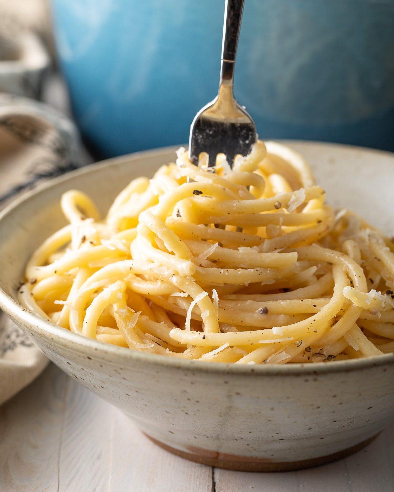

Cacio e Pepe Pasta

Easy and quick recipe of delicious Italian pasta Cacio e Pepe
Ingridients:
- salt
- 8 oz. linguine or spaghetti
- 2 tbsp. butter, divided
- 1 tbsp. extra-virgin olive oil
- Coarsely ground black pepper
- 3/4 c. freshly grated Pecorino, plus more for serving
- 3/4 c. freshly grated Parmesan, plus more for serving
Directions:
- In a large pot of boiling salted water, cook pasta until al dente according
to package directions. Reserve ⅔ cup pasta water before draining.
- In a large skillet over medium heat, melt 1 tablespoon butter with oil. Add
a generous amount of black pepper and toast until fragrant, about 1 minute.
- Add ⅓ cup reserved pasta water and bring to simmer. Whisk in remaining 1
tablespoon butter and, using tongs, add pasta, tossing into butter mixture.
- Add cheeses and toss constantly until cheese is melty, removing skillet from
heat when about half the cheese has melted. (If sauce is too thick, loosen
with more pasta water.)
- Serve topped with more Pecorino and Parmesan.